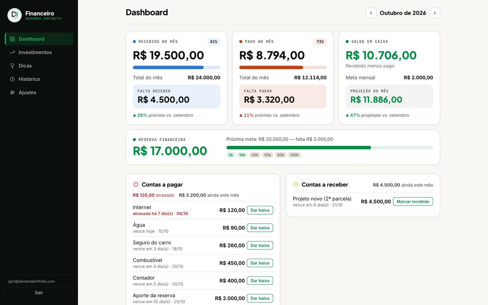
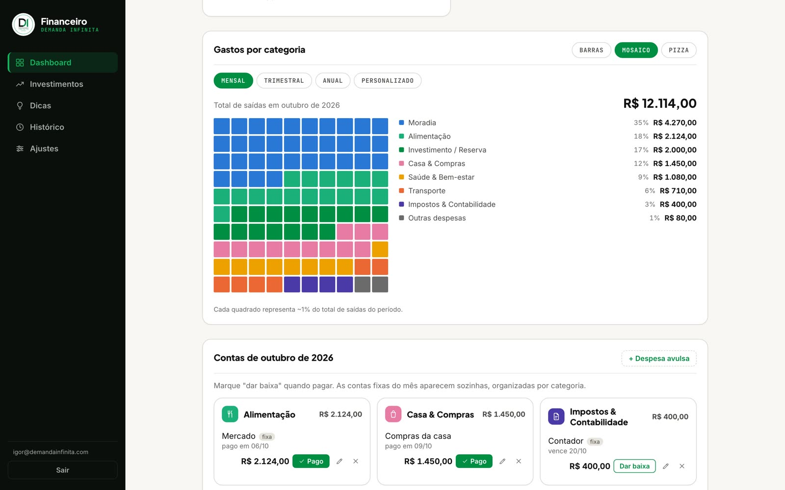
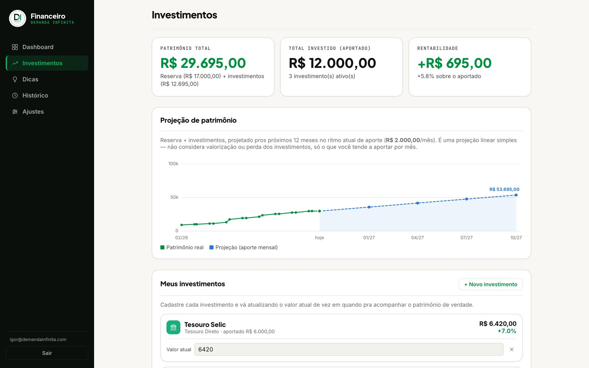
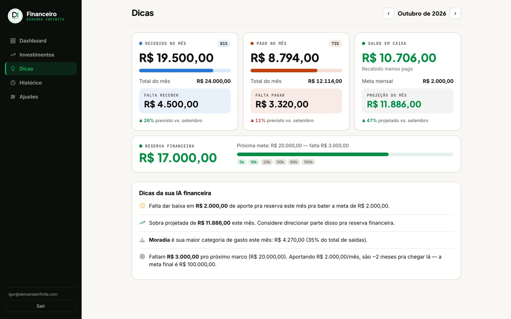

Sua planilha vira um sistema financeiro, feito com o Claude
O passo a passo e os prompts pra transformar a planilha da sua casa num sistema que avisa a conta que vence, mostra pra onde foi o dinheiro e te puxa pra meta. Sem programar.
Material do vídeo · passo a passo
No vídeo eu mostrei o sistema que organiza as finanças da minha casa. Ele nasceu de uma planilha de 22 abas, cada uma num formato diferente. Aqui está o caminho, na ordem, com o prompt de cada etapa pra você copiar, trocar os colchetes e colar no Claude.
A regra que guia tudo: planilha guarda número; sistema te avisa.
O ponto de partida: abas em formatos diferentes, "#REF!" e "conferir" espalhados. Ilustração com dados fictícios.
As peças, em linguagem simples
Banco de dados
O caderno onde ficam as contas, entradas e metas.
Painel
A tela que você abre no celular ou no computador.
Claude Code
Quem constrói. Você descreve e aprova.
O cofre
Login e a regra de que só vocês dois veem os dados.
Endereço
Onde o painel fica no ar, com senha.
Os avisos
Conta atrasada, mês no vermelho, meta perto.
Etapa 00Comece pelas perguntas, não pela tela
Cada tela do sistema precisa responder uma pergunta sua. Se uma tela não responde nenhuma pergunta, ela não precisa existir. Escreva as suas antes de tudo.
Folha das perguntas · preencha antes de tudo
O QUE EU QUERO SABER DO MEU DINHEIRO
1. Quanto ainda falta pagar este mês?
2. Quanto ainda falta receber?
3. Pra onde o dinheiro foi (por categoria)?
4. Estou gastando mais ou menos que no mês passado?
5. Quanto falta pra minha meta de [reserva de R$ ___]?
6. [outra pergunta sua]
Minhas contas fixas (nome, valor, dia do vencimento): [...]
Minhas entradas do mês (de onde vem, quanto, quando): [...]
Quem usa: [só eu / eu e meu parceiro(a)]
Etapa 01A base: banco, login e painel
No Claude Code, abra uma pasta nova chamada minhas-financas e ligue o Plan Mode (Shift + Tab até aparecer "plan mode"). Nesse modo ele planeja e pergunta antes de criar qualquer coisa.
Prompt 1 · o briefing do sistema
Quero transformar a planilha financeira da minha casa num sistema. Antes de criar qualquer arquivo, leia a minha folha de perguntas abaixo, me faça as perguntas que faltam e proponha um plano.
[cole aqui a sua folha das perguntas]
Tecnologia:
- Banco e login: Supabase (plano gratuito)
- Painel: uma página só, publicada no GitHub Pages
- Só [eu / nós dois] entramos, com e-mail e senha; sem cadastro aberto
Me entregue:
1. As perguntas que faltam
2. As tabelas (categorias, contas fixas, lançamentos do mês, metas, investimentos) explicadas em português simples
3. As telas: painel do mês, investimentos, dicas, histórico, ajustes
4. Os riscos de segurança e como você evita cada um
Por trás: o Claude monta a planta antes da obra. Você corrige, tira o que não vai usar e aprova com "Aprovado, pode seguir".

O painel do mês: recebido, pago, saldo, a reserva com os marcos e as contas a pagar e a receber. Valores fictícios.
Etapa 02Traga a sua planilha (do jeito que ela está)
Eu não comecei do zero. Mandei a minha planilha bagunçada, com 22 abas em formatos diferentes, e o Claude leu tudo e trouxe o histórico pra dentro. Exporte a sua (Excel ou Google Planilhas) e coloque o arquivo na pasta.
Prompt 2 · importar o histórico
O arquivo [minha-planilha.xlsx] está na pasta. Cada aba é um mês e os formatos mudaram com o tempo.
Antes de importar qualquer coisa, me mostre:
1. quais abas você entendeu e quais ficaram confusas
2. o total de entradas e saídas de cada mês que você calculou
3. quais linhas parecem ser contas fixas (aparecem todo mês)
Quando eu aprovar, use os totais que eu mesmo calculei em cada aba (são mais confiáveis que re-somar linha por linha) e monte o histórico mês a mês.
Por que pedir pra mostrar antesImportar errado é pior do que não importar. Se uma aba tem um formato muito diferente das outras, pode valer mais a pena deixar ela de fora do que confiar num número torto.
Etapa 03As contas aparecem sozinhas
Todo mês, aluguel, internet, luz e academia aparecem sozinhos. Você só dá baixa quando paga. Em cima, o que ainda falta pagar e o que falta receber: atrasou, fica vermelho; vence essa semana, sobe pro topo.
Prompt 3 · contas do mês
Quero que as minhas contas fixas apareçam sozinhas todo mês, com o valor e o dia de vencimento de cada uma. Eu só clico em "Dar baixa" quando pagar.
No topo do painel:
- "Contas a pagar": tudo que falta pagar no mês. Atrasada em vermelho com quantos dias, as que vencem em até 7 dias em destaque.
- "Contas a receber": o espelho, com "Marcar recebido".
Cuidado: se a página carregar duas vezes seguidas, as contas do mês NÃO podem duplicar. E se eu excluir uma conta fixa de um mês, ela não pode voltar sozinha.
Por trás: as duas regras do fim vêm de erros reais. No meu, as 17 contas fixas chegaram a duplicar num recarregamento rápido, e conta excluída voltava no dia seguinte. Pedindo antes, você não passa por isso.
Etapa 04Pra onde foi o dinheiro

O mosaico: cada quadradinho é 1% de tudo que saiu no mês. Você bate o olho e vê. Valores fictícios.
Prompt 4 · gastos por categoria e comparativo
Quero um bloco "Gastos por categoria" com duas formas de ver:
- barras, da categoria que mais gastou pra que menos gastou, com valor e %
- mosaico de 100 quadradinhos, cada um 1% do total (categoria pequena ganha pelo menos 1)
Com filtro: mensal, trimestral, anual e personalizado.
E em cada número do topo, a comparação com o mês anterior em %. A cor segue o que é bom pra mim, não o sinal: gasto subindo é vermelho, entrada subindo é verde.
Etapa 05A meta que se mexe
Uma barra até R$ 100 mil quase não se mexe, e barra que não se mexe desanima. Divida em marcos. A barra mostra só o próximo, e cada marco batido ganha o check verde. Meta grande desanima; meta próxima puxa.
Meta única
R$ 17 mil de R$ 100 mil · 17%
Meta em marcos
Próximo: R$ 20 mil · faltam R$ 3 mil · 85%
Prompt 5 · reserva em marcos
A minha meta é uma reserva de R$ [100.000]. Divida em marcos: [5 mil, 10 mil, 20 mil, 50 mil, 80 mil, 100 mil].
- a barra mostra o progresso só até o PRÓXIMO marco, não até o final
- embaixo, os marcos em fileira, com check verde nos que eu já bati
- a reserva conta tudo que eu paguei na categoria "Reserva", em qualquer mês
- quero poder mudar os marcos e o aporte mensal numa tela de Ajustes
Etapa 06Patrimônio e o sistema que te avisa

Patrimônio, rentabilidade e a projeção dos próximos 12 meses. Valores fictícios.

As dicas: categoria que mais pesou, quanto falta pro próximo marco. Valores fictícios.
Prompt 6 · investimentos e dicas
Quero uma aba "Investimentos": cada aporte da reserva vai pra um investimento (Tesouro, CDB, fundo...). Mostre o patrimônio total, quanto rendeu e uma projeção dos próximos 12 meses no ritmo do meu aporte mensal. Eu atualizo o valor atual de cada um à mão.
E uma aba "Dicas", calculada com os meus números:
- 3 meses seguidos no vermelho: me avisa
- qual categoria mais pesou no mês
- no ritmo atual, quantos meses faltam pro próximo marco
- se sobrou dinheiro, sugira quanto mandar pra reserva
Bônus · o visual de corretora
Deixe o painel com cara de corretora: menu lateral escuro, conteúdo claro, números grandes e sérios, sem emoji. Se é pra cuidar do dinheiro, que pareça sério.
O plano de ação com IAComo o Claude tem acesso a tudo, você pode perguntar direto pra ele: "olha meus últimos 3 meses e me diz onde dá pra cortar R$ 500". Ele responde com os seus números, não com dica genérica.
Etapa 07Proteja como se fosse o seu banco
É o dado mais sensível da sua vida. Login e senha, e a garantia de que ninguém além de vocês consegue ver.
Prompt 7 · o cofre
Revisa a segurança do meu sistema financeiro como se alguém estivesse tentando ver as minhas contas. Me responde:
- alguém sem login consegue ler alguma tabela?
- tem alguma chave secreta no código da página?
- o cadastro está fechado (só nós dois)?
Me entrega a lista do que corrigir, do mais grave pro menos grave, em português simples, e corrige comigo um por um.
Você não precisa conectar no banco
O meu é manual: eu pago e dou baixa. Leva dois segundos e me obriga a olhar pro meu dinheiro toda vez que ele sai. É o oposto da planilha que você preenche uma vez por mês e esquece.
Erros comuns
Erro
Como evitar
Começar pela tela bonita
Folha das perguntas primeiro
Importar a planilha sem conferir
Pedir pro Claude mostrar os totais antes
Contas do mês duplicando
Pedir a trava contra duplicação no Prompt 3
Meta grande que desanima
Dividir em marcos
Dados abertos na internet
Prompt 7 antes de colocar valor real
Método Demanda Infinita®
Quer sistemas assim rodando no seu negócio?
Em 30 minutos eu olho o seu caso e te mostro por onde começar.